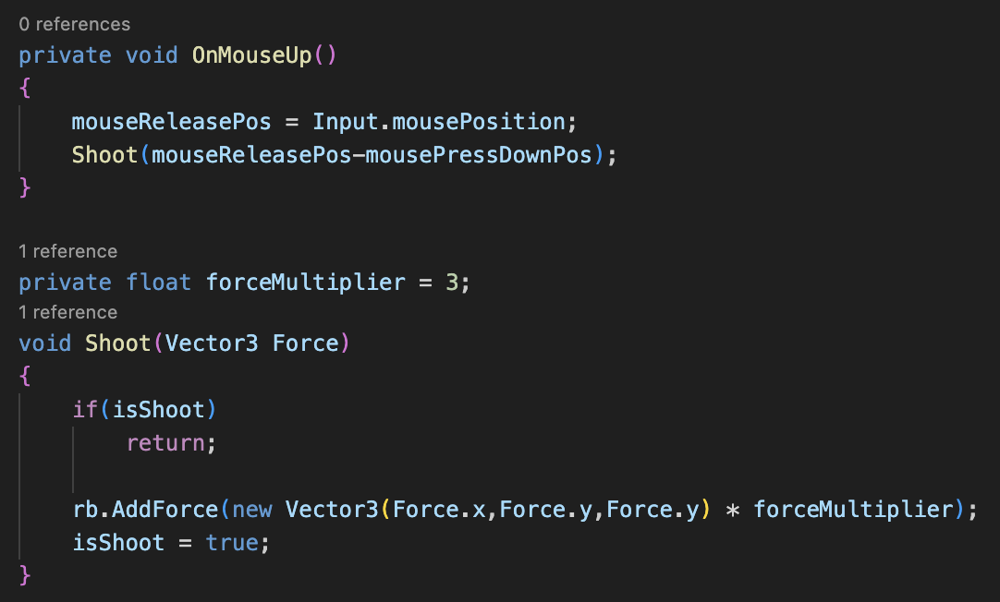

Map the movement of mouse position to the position of the ball, and multiply it with force variable

Once the Ball encounters the cube, the collision happens. Even though the ball has stop moving
These meaning less collision use a large amount of working memory, make the game lag

Set up velocity threshold for Mesh Destroy and limit the maxim collision count to 100